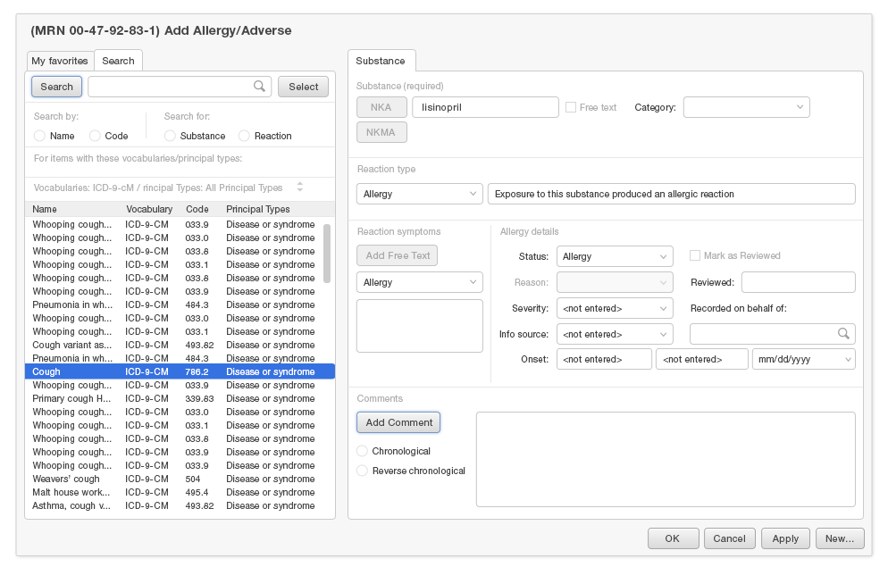

EHR Style Guide v1.5, 2-15-2014 Feedback
4
Allergy List
A Medication Allergy List includes the known medication allergies for a patient, but might include more. It is often referred to more concisely as “Allergy List,” and we adopt that strategy here.
For this chapter, we will focus on true drug allergies and drug adverse effects. Historically, physicians, nurses, patients, and pharmacists have included true drug allergies, other adverse effects (such as nausea or sedation), and allergic reactions. Allergies to substances that are not medications (latex, adhesive tape, peanuts and other foods) may be commonly included in Allergy Lists. Inhalant allergies (hay fever, allergies to dust and mold, and asthma) are usually not included in the Allergy List, but in the Problem List instead.
In one way the Allergy List is the safety net that supports the Medication List. The medication list is checked against this list of allergies for drug-allergies in order to ensure safety. The consequences of an unprevented allergic reaction can range from minor to fatal, so the Allergy List needs to be updated as new allergies are discovered to keep any allergies from being missed. Correcting errors in the Allergy List can be made easy and intuitive with good design.
The Big Three
There are three main user tasks to consider when developing a medication allergy list: glancing at the list, exploring the details, and changing the list.
Glancing at the list
Oftentimes a nurse or doctor needs to quickly refer to the allergy list, ideally with every new prescription or administration of a medication. A brief glance at the list may reveal “no known medication allergies” or the name of a medication about to be ordered for the patient. A short list of only the drug names could suffice, always visible at the right time in the open chart, such as in the patient banner.Exploring the details
Sometimes, a clinician needs to know more details about a purported medication allergy in order to make a clinical decision whether to order the drug anyway. How severe was the allergy? What were the symptoms? How certain are we of the facts? In this instance, a more detailed table view of the Allergy List is appropriate.Changing the list (Adding and editing)
It should be quick and straightforward to add a new entry to the list. Make it effortless to say “No known medication allergies” with a click or two. Don’t require unnecessary detail beyond the name of the substance/drug. Let it be optional to add the reaction details (symptoms, date, severity) because sometimes people don’t know or remember the details. It is important to capture the identity of the user making the edits.Now let’s do some design makeovers and get into some real world scenarios.
Glancing at the Allergy List
Clinical Scenario #1 - bladder infection
Dr. Barnes is seeing a young woman who appears to have a simple bladder infection. The antibiotic of choice would be sulfamethoxazole / trimethoprim (Bactrim). By glancing at the allergy list in the patient banner, Dr. Barnes notices that the patient is allergic to sulfa drugs (Bactrim is a sulfa drug), and chooses a suitable and equally inexpensive drug, ciprofloxin.
Here is a look at a “before and after” makeover of an allergy list. The physician’s main task is glancing at the list when prescribing a new medication, while a nurse is glancing at the list before administering a medication to the patient. In both cases, the physician or nurse would also ask the patient if they are allergic to the drug in question.
The designer’s task is to make sure that the physician or nurse can find that information while engaging the task at hand, not over-burdened with unnecessary detail. This reduces cognitive load (mental effort). A bad idea is to have this information several clicks away or buried in drop-down menu found in a location that needs to be memorized. The navigation requires time and effort, and remembering where to look increases cognitive load.
One easy way to assure access is to include access to the Allergy List in the patient demographic bar.
{kind=link}
In this example using space for symptoms rather than listing more substances is less useful to the physician.
The total number of items in a long list is not visible unless the user hovers with a mouse, and with touch interfaces hover is not an option. At a glance it is good to know if there are more substances in the Allergy List.
Also this list does not indicate severity.
{kind=link}
In our makeover example, more substances can be listed without the symptoms.
We can draw attention to severity with bold text without taking up space or overloading the physician visually.
The number with the word “more” following it is more helpful than requiring a hover. It tells the physician user that there are 2 more drug allergies not displayed in this concise view. The number without the word more could be confusing, especially at a glance when our minds will try to jump to a conclusion about what the number means (Is it a “total” of 2, or are there “2 more” to be seen?).
Including the Allergy List in the patient demographic bar is not the only way to include it into the workflow. The Allergy List could be displayed only in the workflows where new medication prescription or renewals are to be done, so long as it is readily available when it comes to prescribing time. Most other workflows (reviewing lab results or vital signs or reading reports) don’t require an awareness of medication allergies.
{kind=link}
Exploring the Details
Sometimes the physician wants to know a bit more detail about a listed drug allergy. Is the information likely accurate? Is the potential risk of using the drug outweighed by a strong benefit (better effectiveness, lower cost, etc,)?
Clinical Scenario #1 - bladder infection
Dr. Barnes is seeing a 38 year old father of four with a 2 day history of an increasingly sore throat. Five days ago, one of the children had come home from school with a fever and headache. The patient’s rapid strep test indicates strep throat.
Dr. Barnes would usually prescribe penicillin (cheap and effective), but the patient had a severe reaction to penicillin a few years ago (hives, swelling of the lips). The next alternative would be cephalexin (Keflex). Because penicillin and cephalexin are chemically similar, the risk of allergic cross-reaction depends on the severity of the penicillin allergy. Sometimes it is perfectly safe to prescribe cephalexin to someone with a milder penicillin allergy. However, for a severe penicillin allergy, cephalexin should be avoided. The 3rd choice alternative would be clindamycin (more doses per day and more expensive) or azithromycin (Z-Pak, which is more expensive).
With a glance at the patient banner, the physician can see some information, but more details are needed in this clinical scenario. What exactly happened with each drug? Was the reaction severe?
To see the additional details, the detailed table view is needed.
{kind=link}
In this list the physician or nurse can see the information they need with the most important information on the left, and increasingly less important information toward the right. This list reduces the visual load by limiting the information shown which keeps the table simple and effective. Further details can be seen by drilling a step deeper.
{kind=link}
By keeping the table clean and simple we are taking advantage of a human factors principle that “our eyes have expectations” so physicians can instantly make sense of it. How did we know what information was needed and what priority to put on each category? Check out our sidebar for more.
{kind=link}
Changing the Allergy List (Adding and Editing)
Clinical Scenario #3 - Modifying the allergy list
Dr. Barnes is seeing an adult patient who has had a sinus infection for the past two weeks. As Dr. Barnes gets ready to prescribe an antibiotic, he asks the patient about any drug allergies, while at the same time glancing at the allergy list in the Patient Banner. Today the patient reports “Z-Pak gave me hives” last winter after a visit to an urgent care center. Dr. Barnes wants to add Z-Pak to the allergy list.
The patient's allergy list currently includes Augmentin (Augmentin is a combination product containing amoxicillin and clavulanic acid, and amoxicillin is in the penicillin drug family). No reactions are described for the drug allergy. Dr. Barnes decides to take advantage of this opportunity to add some detail to the medication allergy list.
The patient reports having severe nausea when taking Augmentin as a child. Further discussion with the patient reveals that he has tolerated amoxicillin alone (also in the penicillin family) in subsequent years without any trouble.
To correct the allergy list, Dr. Barnes modifies the Augmentin allergy from the category of "allergy" to the category of "side effect."
For this diagnosis, the drug of choice would be Augmentin.
Here is the Allergy List for the patient.
The physician or nurse’s task is to add or remove substances, sometimes quickly and often with other time demands pressing for attention. The designer’s task is to make adding and removing substances quick and intuitive. Here are some details about the physician’s task to keep in mind:
- Add a new entry to the list quickly and with little effort because this task happens often with new patients.
- Record “No known medication allergies” with little effort because this is often the case with younger patients.
- Make reaction details optional (symptoms, date, severity) because sometimes people don’t know or don’t remember the details. Adding the drug name alone can be enough to assure patient safety.
- Allow comments to accommodate those situations when further explanation is needed beyond the existing categories (substance, reaction, category, severity).
- Make it easy to correct erroneous information from previous entries. Sometimes mistakes are made, or new information makes it apparent that the allergy list needs to be modified.
- Make it easy to find out who made entries or edits to the Allergy List. This field can be auto-populated with the active user’s name. That let’s the user gauge the trustworthiness of the information, and whether it may be worth double-checking with the patient about the allergy. In one study of inpatient drug allergy alert override reasons, the physicians doubted the allergy data 40% of the time [Kuperman 2003].
- Allow a drug allergy listing to be inactivated (removed). Otherwise, physicians will need to repeatedly override drug-allergy alerts during the act of prescribing even when no allergy or side-effect exists.
Take a look at the presentation of these two displays for adding an allergy. Which one looks easier? Why? Is it also as safe?
- Before
 After
After
{kind=link}
The “after” example should look more straightforward, but is it equally safe? Let’s look at the design details.
In the following screenshot, the highlighted areas are the only ones that are essential for the task of adding a substance to the Allergy List.
{kind=link}
The information not highlighted is optional for the task at hand, but still has to be looked at, evaluated, and then ignored to complete the task. All the additional unnecessary information for this task is overwhelming and creates more mental work for the physician. This exemplifies "information overload."
In our “after” example, only the necessary data fields are included at the top, and optional details are in the shaded section in the bottom portion. Other technical terms are simply not shown. They don’t help the physician user.
Another reason the “after” design is an improvement has to do with a human factor principle known as the principle of least effort. What are the tasks for adding a new entry to the Allergy List?
- Find the name of the drug or substance.
- Describe or find the reaction symptoms.
- (Optional) Add any additional details needed including the type of reaction, dates, source of the information, etc
Compare these two examples below.
{kind=link}
{kind=link}
{kind=link}
The simple example is easier navigate because it has a clear visual sequence in which the data fields should be completed. The optional section is visually distinct because of it’s shading. This is important because the less effort it takes to complete a task the more likely someone will complete the task. Also it is less time consuming and tiring.
Predictive Search Fields
Predictive search fields can substantially reduce the mental effort and time required to quickly add to an Allergy List. Putting the most likely results at the top makes the visual search easier. In this case, the simple reaction description “cough” is far more likely than the more detailed results such as “whooping cough,” “smoker’s cough,” etc.
One example is be sure the search algorithm places the most likely substances and symptoms at the top rather than following some other sort of ordering system. This is another example of top down processing which is more useful in this case. The top being the broad symptom like a cough with the bottom being a particular type of cough.
{kind=link}
As you can see in our “before” example, it’s challenging to find the simple term “cough” about a third of the way down the list buried amidst the many other complex terms.
Here in our “after” example the simple cough is listed at the top while the other options are listed alphabetically after a visual break, further down the list.
Let's Review what we've learned in this chapter
- Consider the user and the task at hand. That consideration will help you decide what details and functionality are needed for a particular medication list view.
- Thoroughly understand the user tasks and their mental models. The deeper your understanding of the user tasks, the richer and more useful your designed user experience will be.
- Reduce information chaos by eliminating unnecessary details and ambiguity.
- Reduce cognitive load. Don’t make the user do math when the application could. Don’t require repetitive reading. Hide unessential details.